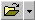
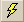
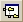
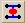
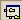
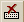
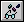
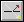
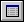
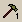

| Button | Description |
 | Clicking the
New button opens an editor window by default. If you click on
the triangular arrow next to the button, you can select a project or other
document type. |
|  | Opens the Open Files dialog. The triangular arrow next to the
button displays a list of previously opened files. |
|  | Runs the current ASAP file. The triangular arrow displays a
list of previously run files. |
|  | Opens or closes the ASAP Workspace window. |
| Opens or closes the Command Output window. |
| Switches between your original screen setting and full
screen. |
|  | Opens ASAP Remote, and is accessible by licensed users of ASAP
CAD+, OPTICAL+, and ADVANCED. |
|  | When selected, you can open a specified plot window from a
plot link in the Command Output window. To set this feature for future plots,
see the User Interface Plot Viewer tab. |
| Stops current run. |
 | Immediately ends the current ASAP session and prepares for a
new one by returning system settings to their default values. |
|  | Creates a new kernel process by initializing all variables in
the kernel. Previous information is no longer stored in kernel memory. Undo is
not available. |
| Opens the Builder window. |
|  | Plots a set of profiles (slices) of the system. This button is
grayed out in the initial default setting. |
| Rewinds the 3D graphics file (*.vcr). |
| Displays the 3D graphics file (*.vcr). |
|  | Traces rays. This button is grayed out in the initial default
setting. |
|  | Shows statistics of current ray data. This button is grayed
out in the initial default setting. |
| Shows an isometric plot of display data. |
 | Opens Contents in ASAP Help. |
| Opens information about ASAP. |
|  | Performs user-defined function as defined on the Custom
Commands tab of the User Interface Preferences dialog box. The Custom Commands
toolbar includes 20 buttons; 1 to 10 are pre-defined but can be changed. Note:
this button is part of the Custom Commands toolbar. |